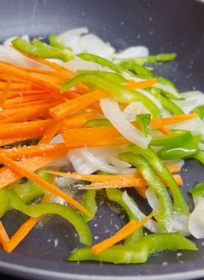
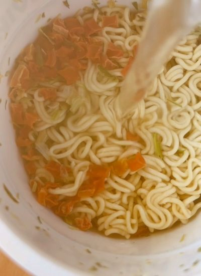
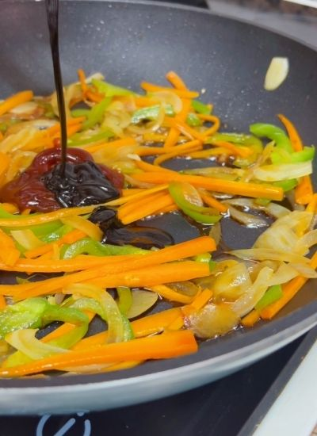

Por probar · Japonesa
← Recetas
Fideos Yakisoba con Verduras
Preparación
- Corta la zanahoria, la cebolla y el pimiento en juliana.
- Saltea las verduras con aceite y sal 3-4 minutos.

- Mientras, cuece los fideos instantáneos según el paquete, al dente.

- Escurre los fideos y pásalos por agua fría para cortar la cocción.
- Añade a las verduras las 2 cucharadas de soja, la de barbacoa (opcional) y el sobre de salsa de los fideos.

- Mezcla los fideos con las verduras y reserva en un plato.
- Bate el huevo y haz una tortilla francesa fina moviendo la sartén en círculos.
- Pon los fideos encima, apaga el fuego, tapa con un plato y dale la vuelta como una tortilla. Sirve.